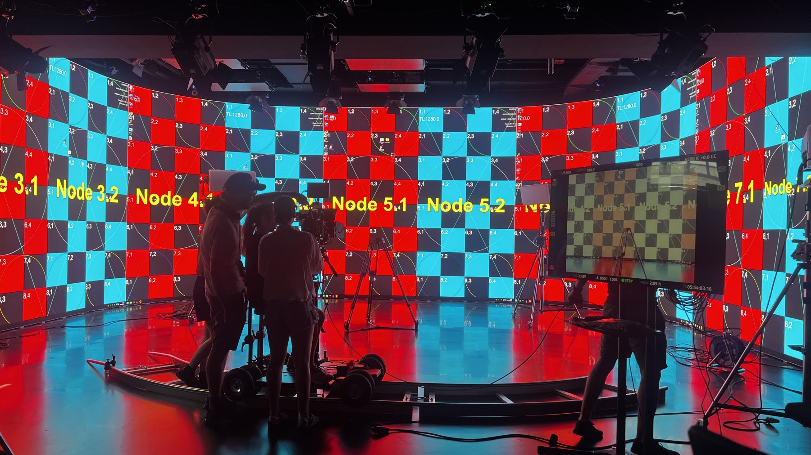
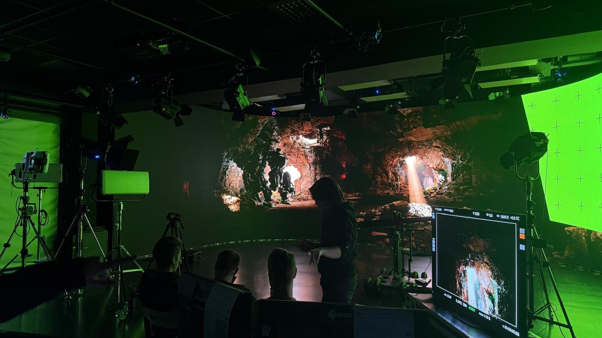
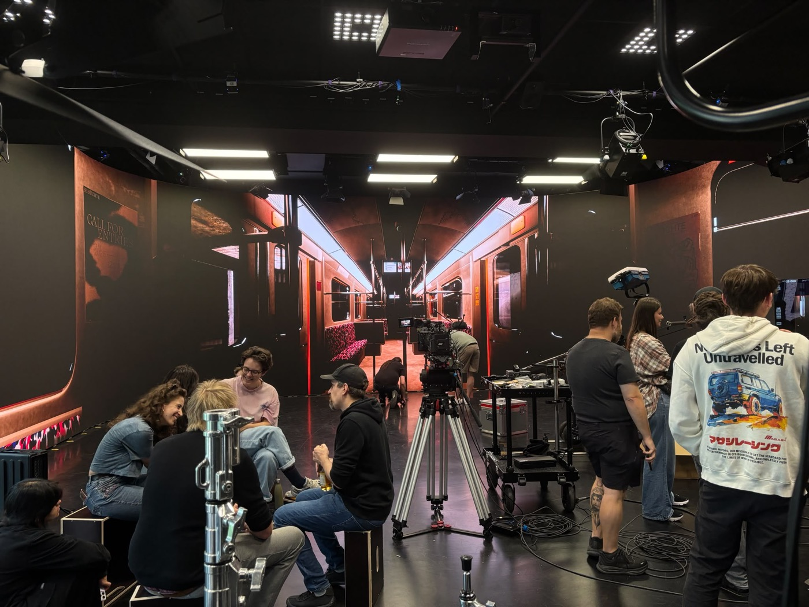
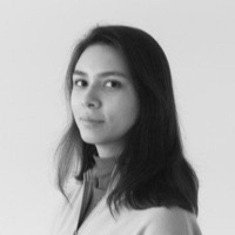
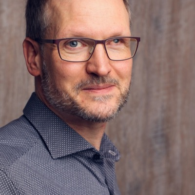

Inaugural Edition · Singapore · 5–6 December 2026
Asia ⇄ Europe Exchange on On-Set Virtual Production & ICVFX
Where Asia's momentum in technology meets Europe's heritage in production and research. An inaugural meeting at the LED wall, on-set Virtual Production across two continents.
About
OSVP EXCHANGE brings together researchers, educators and practitioners working with LED volumes and real-time production pipelines, across an Asia–Europe axis. Building on the link between NTU Singapore (Cinematic Arts / XR Studio / CAVR), TH OWL (Virtual Film Playground), Film University Babelsberg (ProSys / On-Set Virtual Production) and HSHL (LED stage / VFX lab), the symposium pairs Europe's strength in educational and VP research with the technological and production momentum of the Asia-Pacific region. We invite contributions on production support systems, LED volume and display technology, real-time worldbuilding, tracking and stage elements, and access to Virtual Production in education.
Organizing institutions (click to open)



Call for Papers
We invite submissions in English. Every accepted contribution is published in the ACM Digital Library (ICPS) with an individual DOI — full and short papers, plus short proceedings entries for talks and workshops.
Tracks
On-set tools, real-time workflows, asset integration.
LED processing, calibration, color, genlock, frustum/tracking; showcases of real setups.
Environment showcases, asset creation, real-time engines.
Practice-based and artistic research at the volume: cinematic VR, virtual heritage, performance, creative experiments.
VP curricula, educational research, low-cost approaches, student projects.
Camera/object tracking, stage element integration.
Practice talks and showcases bridging Asia and Europe.
Submission categories — all enter the proceedings
Up to 8 pages (excl. references). Original research. Proceedings, DOI.
Details, requirements & template →Up to 4 pages (excl. references). Work in progress, case studies, showcases. Proceedings, DOI.
Details, requirements & template →20-minute presentation with a 1–2 page extended abstract. Proceedings, DOI.
Details, requirements & template →Hands-on session at the LED wall (60–90 min) with a short proceedings write-up. Proceedings, DOI.
Details, requirements & template →Template. All submissions use the ACM Primary Article Template (acmart), current version v2.18 (2026), in the 'sigconf' proceedings format — for LaTeX (Overleaf) and Word. Final versions are uploaded via ACM TAPS (DOI, ORCID, metadata).
Language. English
Peer review. Papers receive at least two documented, double-blind reviews: ACM supports double-blind review and provides anonymization guidelines (no author names or affiliations, third-person self-citation, no grant numbers). Practice showcases that name a specific stage are reviewed single-blind where anonymization is not feasible. See the Author's Guide below.
Proceedings. Every accepted contribution — paper, talk and workshop — appears in the ACM Digital Library (ICPS) with its own DOI.
Timeline
Deadlines
| 27 July 2026 | Call for Papers released |
| 19 October 2026 (AoE) | Submission deadline |
| 9 November 2026 | Notification of acceptance |
| 23 November 2026 | Camera-ready due |
| 5–6 December 2026 | Symposium |
Calendar
People

Jennifer MeierFounding ChairFilm University Babelsberg / TH OWL
Stefan AlbertzHSHL — LED stage / VFX labSubmit
Submission system: OpenReview / EasyChair / HotCRP (TBD)
Contact: TBD